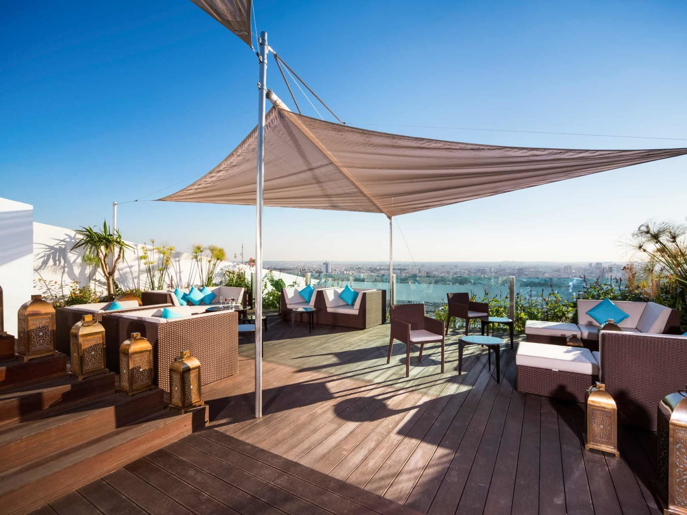
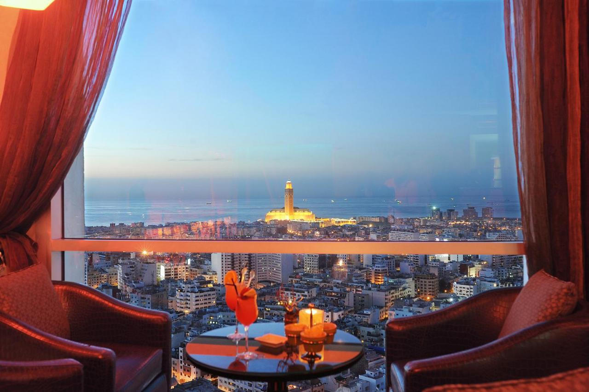
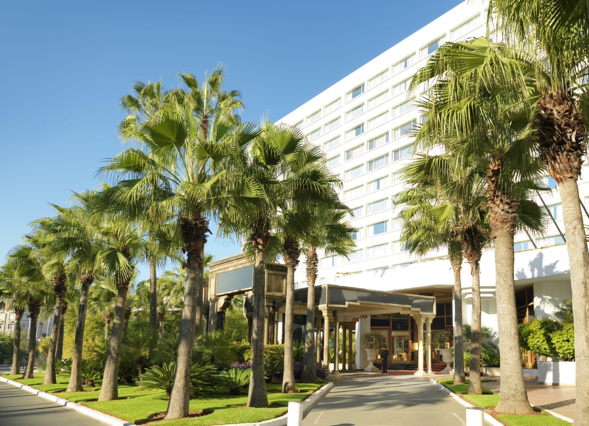
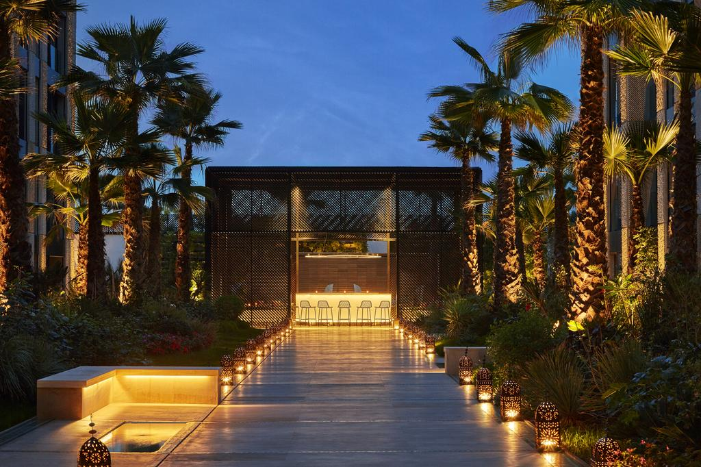

Casablanca compte de nombreux hôtels haut de gamme au Maroc , et la plupart d'entre eux sont situés en centre-ville
Cet hôtel est l'un des meilleurs hôtels de Casablanca, au Maroc, car il est situé près du centre-ville et à seulement quelques minutes de la vieille ville. Ainsi qu'à proximité de la Mosquée Hassan II et du port de Casablanca, et l'aéroport de Casablanca est à environ 35 km de cet hôtel.